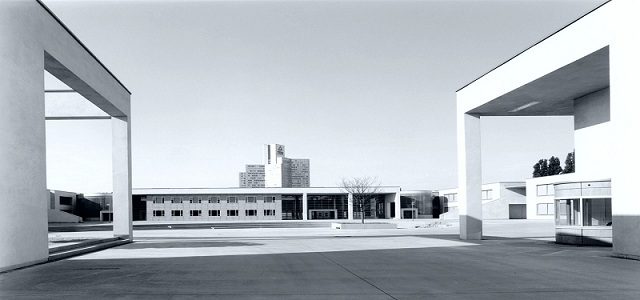

Abschlusspräsentation des Oberstufenprojekts
Bewertungssoftware der Oberstufenprojekte
Bewertungssoftware der Oberstufenprojekte
Sabrina Appel, Sebastian Ritter, Alexander Deter, Kai Oliver Quambusch
1
[Einleitung und Begrüßung - Initialisierung - Durchführung - Entwicklung der Software - Abschluss]
Agenda:
- Einleitung und Begrüßung
- Initialisierung
- Projektumfeld
- Ausgangslage
- Projektziele
- Durchführung
- Vorgehensmodell
- Zeitplanung
- Meilensteine
- Qualitätssicherung
- Kostenanalyse
Sebastian Ritter
Sabrina Appel
Alexander Deter und Kai Oliver Quambusch
Sabrina Appel, Sebastian Ritter, Alexander Deter, Kai Oliver Quambusch
2
[Einleitung und Begrüßung - Initialisierung - Durchführung - Entwicklung der Software - Abschluss]
Agenda (fortsetzung):
- Entwicklung der Software
- Entwurf
- Implementierung
- Abschluss
- Soll-Ist-Analyse
- Wirtschaftlichkeit
- Fazit
Kai Oliver Quambusch
Sebastian Ritter
Sabrina Appel, Sebastian Ritter, Alexander Deter, Kai Oliver Quambusch
3
[Einleitung und Begrüßung - Initialisierung - Durchführung - Entwicklung der Software - Abschluss]
Projektumfeld
Georg-Simon-Ohm Berufskolleg
Frau Neitzel

Georg-Simon-Ohm Berufskolleg
Frau Neitzel
Sabrina Appel, Sebastian Ritter, Alexander Deter, Kai Oliver Quambusch
4
[Einleitung und Begrüßung - Initialisierung - Durchführung - Entwicklung der Software - Abschluss]
Benotetes Oberstufenprojekt wird durchgeführt
Vorbereiten auf betriebliches Abschlussprojekt
Projektumfeld - Organisatorische Schnittstellen
Frau Neitzel
Herr Frenz
Grupper der FIA01
Sebastian Ritter
Sabrina Appel
Alexander Deter
Kai Oliver Quambusch
Frau Neitzel
Herr Frenz
Grupper der FIA01
Sebastian Ritter
Sabrina Appel
Alexander Deter
Kai Oliver Quambusch
Sabrina Appel, Sebastian Ritter, Alexander Deter, Kai Oliver Quambusch
5
[Einleitung und Begrüßung - Initialisierung - Durchführung - Entwicklung der Software - Abschluss]
Projektumfeld - Technische Schnittstelle
Arbeitsmittel:
Arbeitsmittel - Software:
- Raum C017 - Georg-Simon-Ohm Berufskolleg
- Schul-PC (Windows XP)
- Laptop (Windows 7)
- Laptop (Ubuntu Linux 12.04 LTS*)
- MacBook Pro (Mac OS X Mountain Lion)
Arbeitsmittel - Software:
- Microsoft Office 2007/2010/2011-Anwendungen
- Excel
- Visio
- Word
- Project
- Open Office Org 3.3.0
- Vim (7.3)
- Aptana Studio (3)
- Git 1.7.9.5
- FileZilla
- Dropbox
- MySQL 5 und phpMyAdmin
- Debian Server (squeeze)
* Long Term Support
Sabrina Appel, Sebastian Ritter, Alexander Deter, Kai Oliver Quambusch
6
[Einleitung und Begrüßung - Initialisierung - Durchführung - Entwicklung der Software - Abschluss]
Ausgangslage
Benotung der Oberstufenprojekte
Excel Datei wird auf Server abgelegt
Unübersichtlich
Excel Datei wird auf Server abgelegt
Unübersichtlich
- Viele Gruppen
- Schwer zu händeln
- Mehrarbeit für Lehrer
Sabrina Appel, Sebastian Ritter, Alexander Deter, Kai Oliver Quambusch
7
[Einleitung und Begrüßung - Initialisierung - Durchführung - Entwicklung der Software - Abschluss]
Eine Anwendung wird benötigt
Projektziele
Anwendung wird entwickelt zur...